Horizontal version of geom_boxplot().
gf_boxploth(
object = NULL,
gformula = NULL,
data = NULL,
...,
alpha,
color,
fill,
group,
linetype,
linewidth,
coef,
outlier.color = NULL,
outlier.fill = NULL,
outlier.shape = 19,
outlier.size = 1.5,
outlier.stroke = 0.5,
outlier.alpha = NULL,
notch = FALSE,
notchwidth = 0.5,
varwidth = FALSE,
xlab,
ylab,
title,
subtitle,
caption,
geom = "boxploth",
stat = "boxploth",
position = "dodgev",
show.legend = NA,
show.help = NULL,
inherit = TRUE,
environment = parent.frame()
)Arguments
- object
When chaining, this holds an object produced in the earlier portions of the chain. Most users can safely ignore this argument. See details and examples.
- gformula
A formula with shape
y ~ x. Faceting can be achieved by including|in the formula.- data
The data to be displayed in this layer. There are three options:
If
NULL, the default, the data is inherited from the plot data as specified in the call toggplot().A
data.frame, or other object, will override the plot data. All objects will be fortified to produce a data frame. Seefortify()for which variables will be created.A
functionwill be called with a single argument, the plot data. The return value must be adata.frame, and will be used as the layer data. Afunctioncan be created from aformula(e.g.~ head(.x, 10)).- ...
Additional arguments. Typically these are (a) ggplot2 aesthetics to be set with
attribute = value, (b) ggplot2 aesthetics to be mapped withattribute = ~ expression, or (c) attributes of the layer as a whole, which are set withattribute = value.- alpha
Opacity (0 = invisible, 1 = opaque).
- color
A color or a formula used for mapping color.
- fill
A color for filling, or a formula used for mapping fill.
- group
Used for grouping.
- linetype
A linetype (numeric or "dashed", "dotted", etc.) or a formula used for mapping linetype.
- linewidth
A numerical line width or a formula used for mapping linewidth.
- coef
Length of the whiskers as multiple of IQR. Defaults to 1.5.
- outlier.color, outlier.size, outlier.stroke, outlier.shape
Default aesthetics for outliers. Set to NULL to inherit from the aesthetics used for the box. In the unlikely event you specify both US and UK spellings of colour, the US spelling will take precedence. Sometimes it can be useful to hide the outliers, for example when overlaying the raw data points on top of the boxplot. Hiding the outliers can be achieved by setting outlier.shape = NA. Importantly, this does not remove the outliers, it only hides them, so the range calculated for the y-axis will be the same with outliers shown and outliers hidden.
- outlier.fill
Default aesthetics for outliers. Set to
NULLto inherit from the aesthetics used for the box.In the unlikely event you specify both US and UK spellings of colour, the US spelling will take precedence.
Sometimes it can be useful to hide the outliers, for example when overlaying the raw data points on top of the boxplot. Hiding the outliers can be achieved by setting
outlier.shape = NA. Importantly, this does not remove the outliers, it only hides them, so the range calculated for the y-axis will be the same with outliers shown and outliers hidden.- outlier.alpha
Default aesthetics for outliers. Set to
NULLto inherit from the aesthetics used for the box.In the unlikely event you specify both US and UK spellings of colour, the US spelling will take precedence.
Sometimes it can be useful to hide the outliers, for example when overlaying the raw data points on top of the boxplot. Hiding the outliers can be achieved by setting
outlier.shape = NA. Importantly, this does not remove the outliers, it only hides them, so the range calculated for the y-axis will be the same with outliers shown and outliers hidden.- notch
If
FALSE(default) make a standard box plot. IfTRUE, make a notched box plot. Notches are used to compare groups; if the notches of two boxes do not overlap, this suggests that the medians are significantly different.- notchwidth
For a notched box plot, width of the notch relative to the body (defaults to
notchwidth = 0.5).- varwidth
If
FALSE(default) make a standard box plot. IfTRUE, boxes are drawn with widths proportional to the square-roots of the number of observations in the groups (possibly weighted, using theweightaesthetic).- xlab
Label for x-axis. See also
gf_labs().- ylab
Label for y-axis. See also
gf_labs().- title, subtitle, caption
Title, sub-title, and caption for the plot. See also
gf_labs().- geom
A character string naming the geom used to make the layer.
- stat
Use to override the default connection between
geom_boxplotandstat_boxplot.- position
Position adjustment, either as a string, or the result of a call to a position adjustment function.
- show.legend
logical. Should this layer be included in the legends?
NA, the default, includes if any aesthetics are mapped.FALSEnever includes, andTRUEalways includes. It can also be a named logical vector to finely select the aesthetics to display.- show.help
If
TRUE, display some minimal help.- inherit
A logical indicating whether default attributes are inherited.
- environment
An environment in which to look for variables not found in
data.
Value
a gg object
Horizontal Geoms
There are two ways to obtain "horizontal" geoms:
(1) The ggstance package provides a set of "horizontal" geoms and positions;
(2) Thee ggplot2 now provides an orientation argument for "native" horizontal
geoms and positions. ggformula supports both.
Specifying plot attributes
Positional attributes (a.k.a, aesthetics) are specified using the formula in gformula.
Setting and mapping of additional attributes can be done through the
use of additional arguments.
Attributes can be set can be set using arguments of the form attribute = value or
mapped using arguments of the form attribute = ~ expression.
In formulas of the form A | B, B will be used to form facets using
facet_wrap() or facet_grid().
This provides an alternative to
gf_facet_wrap() and
gf_facet_grid() that is terser and may feel more familiar to users
of lattice.
Evaluation
Evaluation of the ggplot2 code occurs in the environment of gformula.
This will typically do the right thing when formulas are created on the fly, but might not
be the right thing if formulas created in one environment are used to create plots
in another.
See also
Examples
gf_boxploth(sex ~ age, data = mosaicData::HELPrct, varwidth = TRUE)
#> Warning: The following aesthetics were dropped during statistical transformation: x
#> ℹ This can happen when ggplot fails to infer the correct grouping structure in
#> the data.
#> ℹ Did you forget to specify a `group` aesthetic or to convert a numerical
#> variable into a factor?
#> Warning: Using the `size` aesthietic with geom_segment was deprecated in ggplot2 3.4.0.
#> ℹ Please use the `linewidth` aesthetic instead.
#> Warning: Using the `size` aesthietic with geom_polygon was deprecated in ggplot2 3.4.0.
#> ℹ Please use the `linewidth` aesthetic instead.
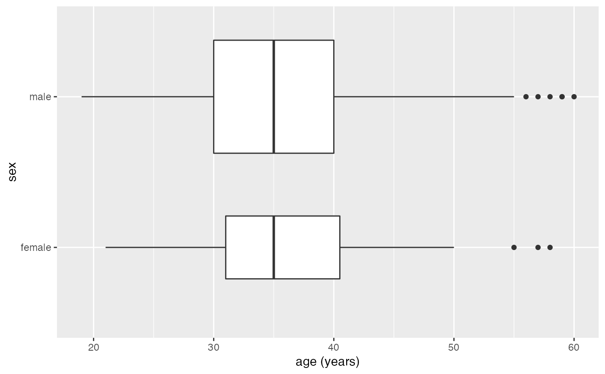
gf_boxplot(sex ~ age, data = mosaicData::HELPrct, varwidth = TRUE, orientation = 'y')
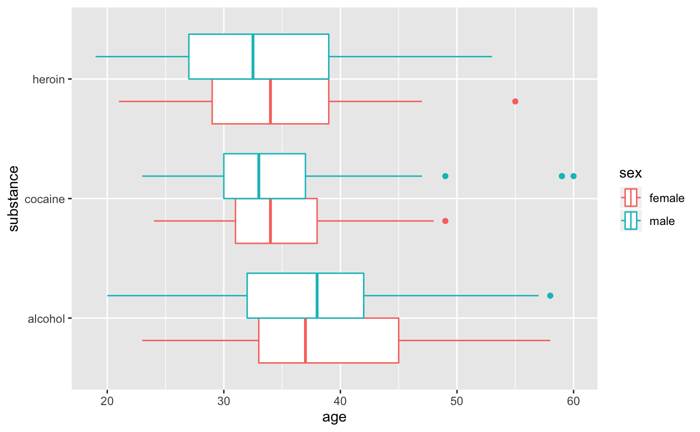
gf_boxploth(substance ~ age, data = mosaicData::HELPrct, color = ~sex)
#> Warning: The following aesthetics were dropped during statistical transformation: x
#> ℹ This can happen when ggplot fails to infer the correct grouping structure in
#> the data.
#> ℹ Did you forget to specify a `group` aesthetic or to convert a numerical
#> variable into a factor?
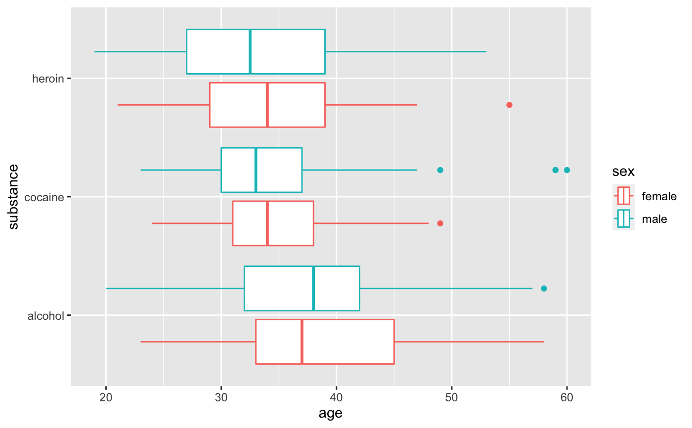
# move boxplots away a bit by adjusting dodge
gf_boxploth(substance ~ age,
data = mosaicData::HELPrct, color = ~sex,
position = position_dodgev(height = 0.9)
)
#> Warning: The following aesthetics were dropped during statistical transformation: x
#> ℹ This can happen when ggplot fails to infer the correct grouping structure in
#> the data.
#> ℹ Did you forget to specify a `group` aesthetic or to convert a numerical
#> variable into a factor?
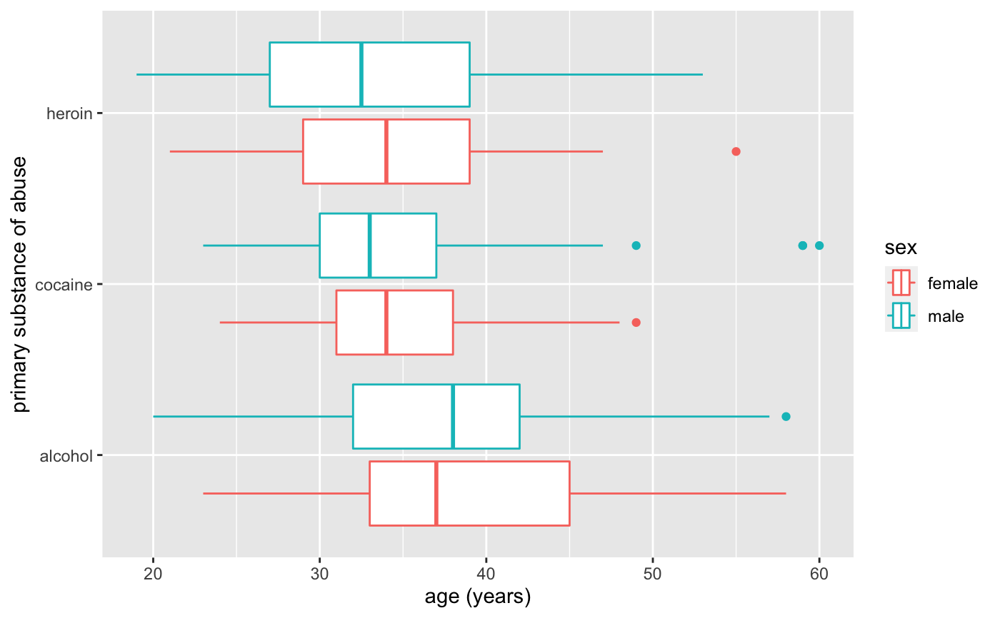
# gf_boxplot guesses horizontal because substance is categorical
gf_boxplot(substance ~ age,
data = mosaicData::HELPrct, color = ~sex,
position = position_dodge(width = 0.9)
)
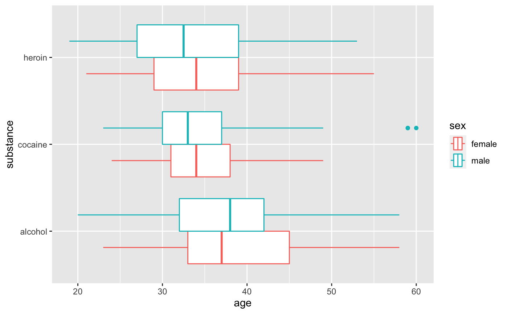
gf_boxploth(substance ~ age, data = mosaicData::HELPrct, color = ~sex, outlier.color = "gray50")
#> Warning: The following aesthetics were dropped during statistical transformation: x
#> ℹ This can happen when ggplot fails to infer the correct grouping structure in
#> the data.
#> ℹ Did you forget to specify a `group` aesthetic or to convert a numerical
#> variable into a factor?
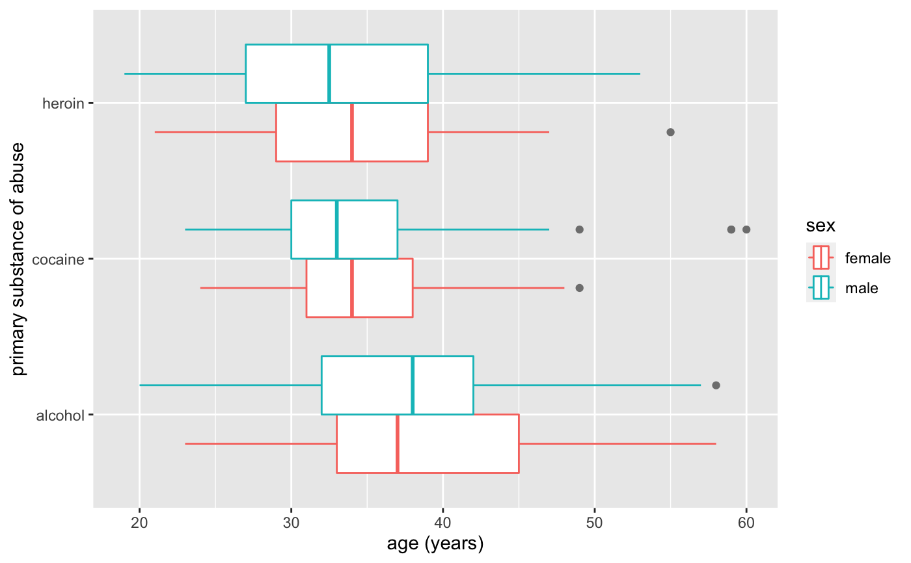
# longer whiskers
gf_boxploth(substance ~ age, data = mosaicData::HELPrct, color = ~sex, coef = 2)
#> Warning: The following aesthetics were dropped during statistical transformation: x
#> ℹ This can happen when ggplot fails to infer the correct grouping structure in
#> the data.
#> ℹ Did you forget to specify a `group` aesthetic or to convert a numerical
#> variable into a factor?
 # Note: height for boxplots is full width of box.
# For jittering, it is the half-height.
gf_boxploth(substance ~ age | sex, data = mosaicData::HELPrct, coef = 5, height = 0.4) %>%
gf_jitter(height = 0.2, alpha = 0.3)
#> Warning: The following aesthetics were dropped during statistical transformation: x
#> ℹ This can happen when ggplot fails to infer the correct grouping structure in
#> the data.
#> ℹ Did you forget to specify a `group` aesthetic or to convert a numerical
#> variable into a factor?
#> Warning: The following aesthetics were dropped during statistical transformation: x
#> ℹ This can happen when ggplot fails to infer the correct grouping structure in
#> the data.
#> ℹ Did you forget to specify a `group` aesthetic or to convert a numerical
#> variable into a factor?
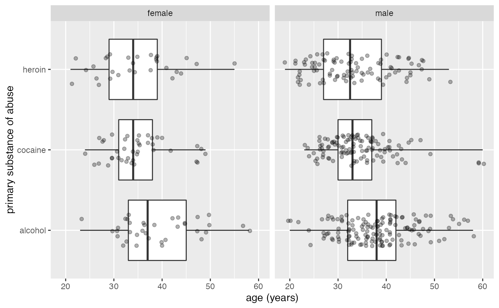
# combining boxplots and histograms
gf_histogram(~eruptions, data = faithful) %>%
gf_boxploth(0 ~ eruptions, alpha = 0, width = 2)
#> Warning: The following aesthetics were dropped during statistical transformation: x
#> ℹ This can happen when ggplot fails to infer the correct grouping structure in
#> the data.
#> ℹ Did you forget to specify a `group` aesthetic or to convert a numerical
#> variable into a factor?
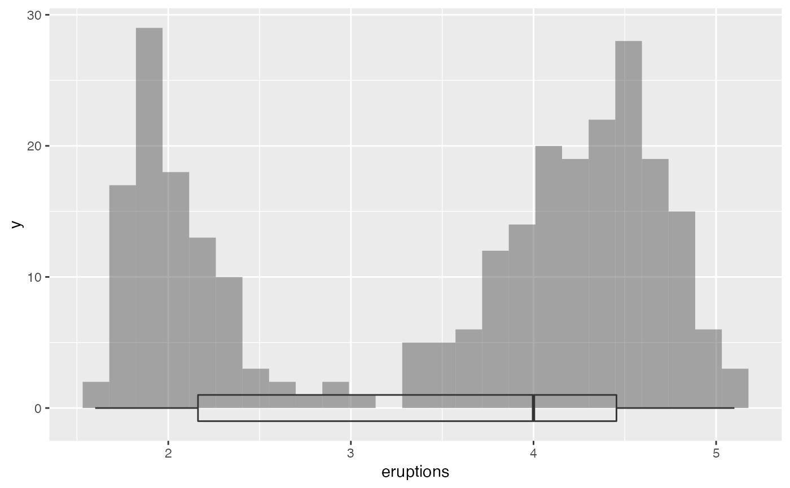
gf_histogram(~eruptions, data = faithful) %>%
gf_boxploth(-2 ~ eruptions, alpha = 0, width = 2)
#> Warning: The following aesthetics were dropped during statistical transformation: x
#> ℹ This can happen when ggplot fails to infer the correct grouping structure in
#> the data.
#> ℹ Did you forget to specify a `group` aesthetic or to convert a numerical
#> variable into a factor?
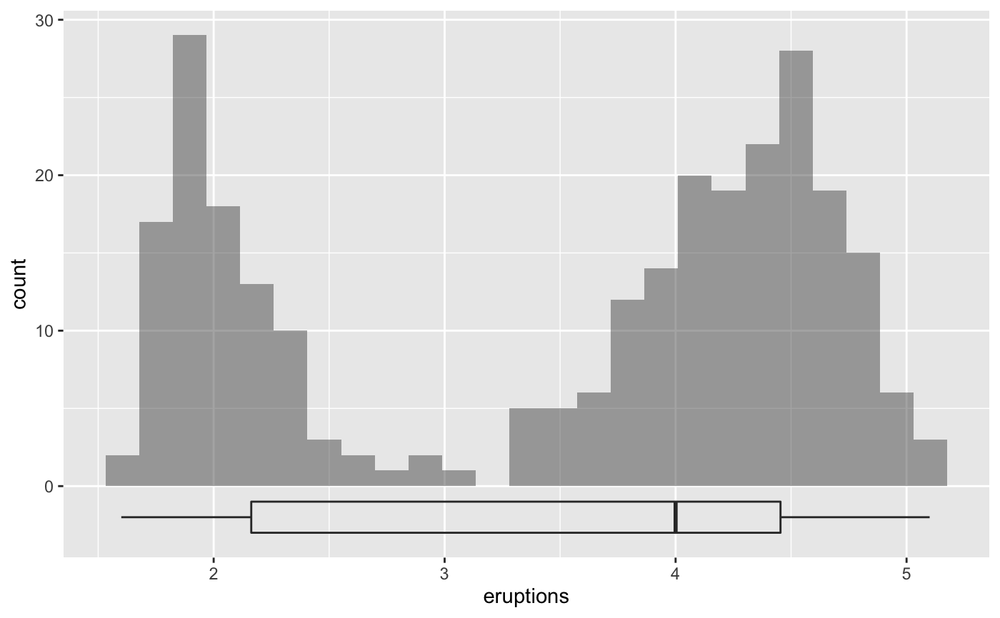
gf_histogram(~eruptions, data = faithful) %>%
gf_boxploth(32 ~ eruptions, alpha = 0, width = 2)
#> Warning: The following aesthetics were dropped during statistical transformation: x
#> ℹ This can happen when ggplot fails to infer the correct grouping structure in
#> the data.
#> ℹ Did you forget to specify a `group` aesthetic or to convert a numerical
#> variable into a factor?
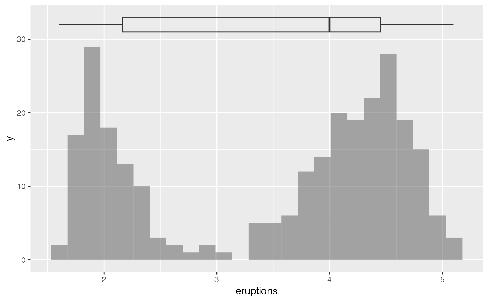
# Note: height for boxplots is full width of box.
# For jittering, it is the half-height.
gf_boxploth(substance ~ age | sex, data = mosaicData::HELPrct, coef = 5, height = 0.4) %>%
gf_jitter(height = 0.2, alpha = 0.3)
#> Warning: The following aesthetics were dropped during statistical transformation: x
#> ℹ This can happen when ggplot fails to infer the correct grouping structure in
#> the data.
#> ℹ Did you forget to specify a `group` aesthetic or to convert a numerical
#> variable into a factor?
#> Warning: The following aesthetics were dropped during statistical transformation: x
#> ℹ This can happen when ggplot fails to infer the correct grouping structure in
#> the data.
#> ℹ Did you forget to specify a `group` aesthetic or to convert a numerical
#> variable into a factor?
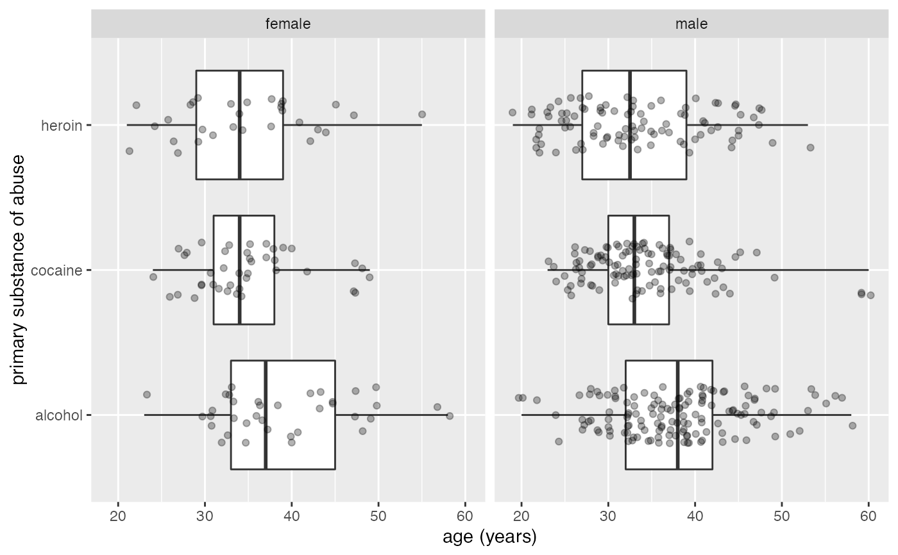
# combining boxplots and histograms
gf_histogram(~eruptions, data = faithful) %>%
gf_boxploth(0 ~ eruptions, alpha = 0, width = 2)
#> Warning: The following aesthetics were dropped during statistical transformation: x
#> ℹ This can happen when ggplot fails to infer the correct grouping structure in
#> the data.
#> ℹ Did you forget to specify a `group` aesthetic or to convert a numerical
#> variable into a factor?
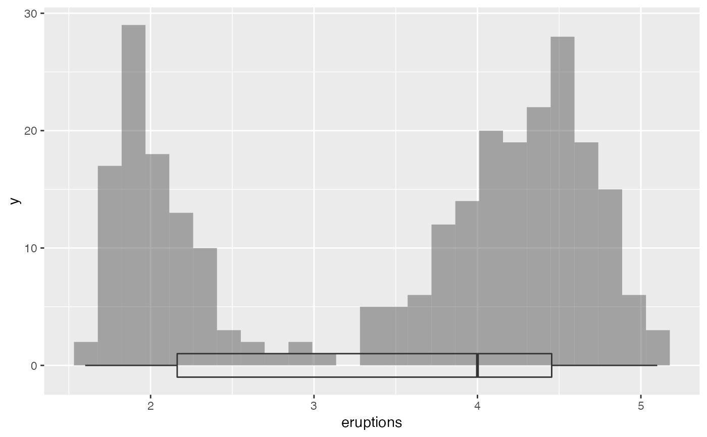
gf_histogram(~eruptions, data = faithful) %>%
gf_boxploth(-2 ~ eruptions, alpha = 0, width = 2)
#> Warning: The following aesthetics were dropped during statistical transformation: x
#> ℹ This can happen when ggplot fails to infer the correct grouping structure in
#> the data.
#> ℹ Did you forget to specify a `group` aesthetic or to convert a numerical
#> variable into a factor?
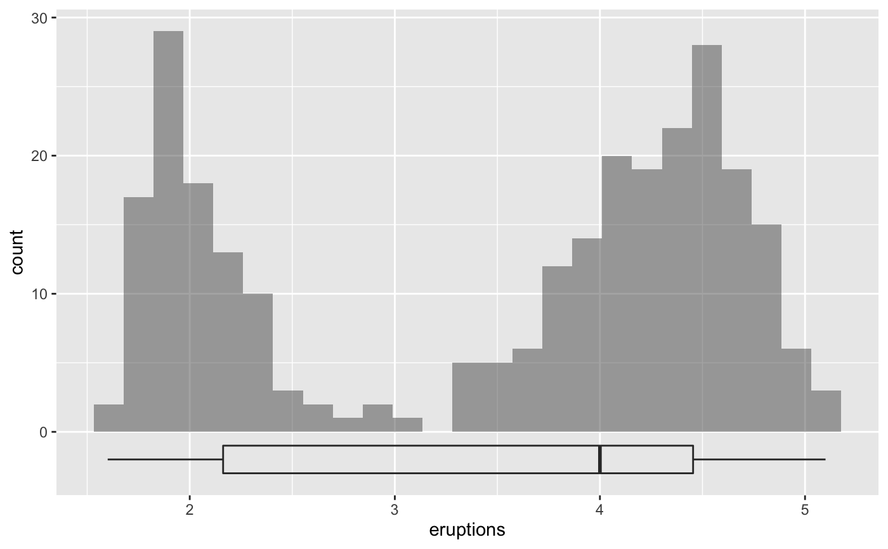
gf_histogram(~eruptions, data = faithful) %>%
gf_boxploth(32 ~ eruptions, alpha = 0, width = 2)
#> Warning: The following aesthetics were dropped during statistical transformation: x
#> ℹ This can happen when ggplot fails to infer the correct grouping structure in
#> the data.
#> ℹ Did you forget to specify a `group` aesthetic or to convert a numerical
#> variable into a factor?
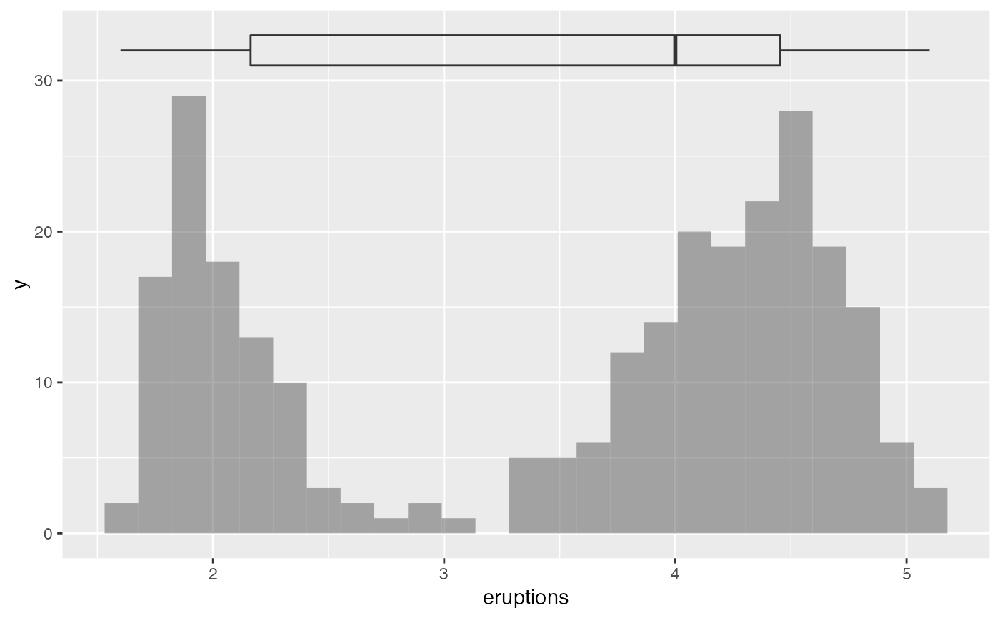